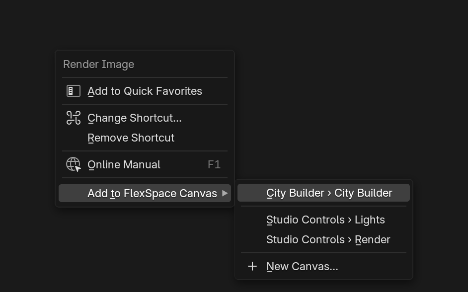
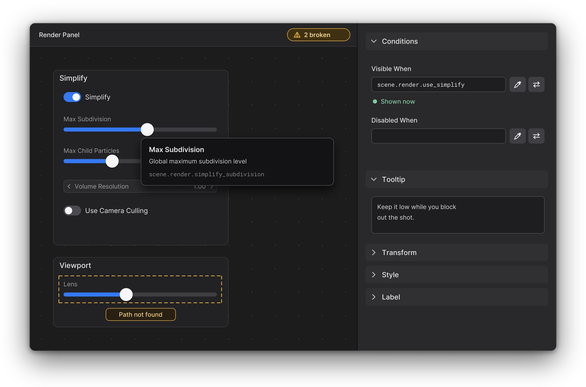

Sliders, toggles and property labels control a Blender property through a Data Path. Operator buttons run an operator. This page shows the quick ways to set them up.
Data paths#
A data path starts from the current context, the same way Python reaches it through bpy.context:
scene.: the current frame.frame_current active_object.: the X location of the active object.location[0] active_object.: a custom property of the bonepose. bones["jaw"]["open"] jawof the active rig.space_data.: a setting of the editor the widget is drawn in.overlay. show_overlays
A path that starts with active_object follows whatever object is active, unless the widget is pinned to one object (see below).
Each widget expects one kind of property: sliders and number fields take a number (integer or float), toggles a boolean, an Enum (or a toggle in Set Value mode) an enum or an integer, a Color Swatch, Color Picker or Color Palette a colour, labels anything.
The eyedropper#
The fastest way to bind a widget:
- Select the widget in Edit Mode and find its Data Path field in the sidebar.
- Click the eyedropper button next to the field. The field now says what to pick:
- Right Click a Slider-Like Property for a slider or number field.
- Right Click a Boolean Property for a toggle.
- Right Click an Enum or Integer Property for an Enum (or a toggle in Set Value mode).
- Right Click a Color Property for a Color Swatch, Color Picker or Color Palette.
 Screenshot
Screenshot- Right-click the property you want, in any editor (the Properties editor, the sidebar of the 3D Viewport...).
- Done: the path is filled in for you. For a slider, Min and Max are also set from the property's range.
 Screenshot
Screenshotactive_object.data.exposure , the pin control under it shows the slider drives this light, and the slider is labelled and shows its value.Press Esc to cancel at any time.
Add to FlexSpace Canvas#
You don't have to open a canvas first. Right-click any property or button in Blender (the Properties editor, a sidebar, a menu item, a node) and choose Add to FlexSpace Canvas:
- Right-click the property, for example Location X in the Object properties, or an operator button such as Shade Smooth.
- Choose Add to FlexSpace Canvas. Its submenu lists your Flex Space canvases:
- first, the canvas you used last, with its current page (Lights › Main);
- then its other pages and your other canvases (with many pages, only each canvas' current page, and up to 20 pages of the first canvas);
- last, New Canvas..., which asks for a name and makes one.
- Pick a canvas and page. The widget is added there, already set up.
What you get is the same as Widgets > Add from Property: a Toggle for an on / off property, an Enum, a slider for a 0–1 range, a Number Field, a Color Swatch, a readout Label for anything else, labelled and bound. A property of an object is pinned to that object. An operator button becomes an Operator button that runs the same operator with the same settings (like Blender's Add to Quick Favorites).
- On one item of a vector (Location X, a colour's red), the menu has Add All to FlexSpace Canvas (the whole vector, one field per value in a Flex Box) and Add Single to FlexSpace Canvas (only that value, for example
active_object.).location[0] - The widget goes to a free spot in the part of the page you can see, clear of the other widgets. If there is no room, it goes under them.
- The page you chose becomes the canvas' current page. The new widget is selected and flashes once. If no editor shows that canvas, Blender's status bar says where it went (Added to Lights › Main).
- One Ctrl+Z removes it.
- Armature Picker canvases are not listed: add picker widgets from the picker itself.
 Screenshot
Screenshot

Screenshot Screenshot
ScreenshotFollow the active object or pin one#
A path that starts with active_object (active_object., the power of a light) can work two ways. The pin control under the Data Path field shows which one:
- Active Object: the widget drives whatever object is active. Select another light and it drives that one.
- Pinned (the object's name, with a pin icon): the widget always drives that object, whatever is active. Renaming the object keeps the binding.
Click the pin control to switch: pinning takes the object that is active now, unpinning makes the widget follow the active object again. The object field next to it pins any other object.
On a FlexSpace canvas, the eyedropper and Add from Property pin the object you picked from, so a control panel keeps driving "this light's power". Unpin a widget that should follow the active object.
On an Armature Picker, they leave the widget following the active object, so a picker drives whichever rig you are posing. Pin a widget that should always drive one object.
Copy Full Data Path#
Right-click any property in Blender and choose Copy Full Data Path (or hover it and press Ctrl+Shift+Alt+C), then paste it into the Data Path field with Ctrl+V.
A path like bpy. is turned into the form FlexSpace stores, blend_data.. It always drives that object, whatever is active.
When a binding is broken#
In Edit Mode a widget whose path doesn't work gets a dashed warning outline and a note in its badge. The sidebar says why under the field:
- Pick a property, or paste its path (muted): nothing is bound yet.
- Path not found: the path doesn't lead anywhere (a renamed object or bone, a typo).
- Pinned object is gone: the object the widget is pinned to was deleted.
- Not a number, Not a boolean, Not an enum or integer or Not a colour: the property is of the wrong kind for this widget.
- No items: an Enum bound to an integer has no item list yet (and no small range to show).
The canvas top bar counts them on every page that works in the current mode and with the active object (⚠ 2 broken, 1 unbound). Click the count to jump to the next broken widget, see The canvas top bar.
 Screenshot
ScreenshotShow, hide or disable a widget with a property#
Any widget can follow a boolean property: show it only while Simplify is on, grey a slider out while the rig is in FK. Select the widget in Edit Mode and open the Conditions panel of the sidebar (Widget tab):
- Visible When: the widget is shown only while this property is on. In Live Mode a hidden widget is not drawn, can't be clicked, and is left out of the minimap. In Edit Mode it is drawn faint, so you can still select, move and edit it.
- Disabled When: the widget is greyed out while this property is on (faded by the theme's Disabled Opacity). In Live Mode a click or drag on it does nothing and adds no undo step.
Each one takes a data path to a boolean, like a toggle's (for example scene.). Type or paste it, or use the eyedropper button and right-click a checkbox anywhere in Blender. The arrows button next to the field (Invert) flips it: shown or disabled while the property is off.
Under the field the panel says what the condition does now (Shown now, Hidden now, Disabled now, Usable now). A path that doesn't lead to a boolean has no effect (the widget stays shown and usable) and is marked in red.
To pick one item of a checkbox row (for example the Z of an object's Lock Location), right-click that checkbox: the path gets its index, like active_object..
A path that starts with active_object follows the widget's pin, like its data path: a pinned widget reads the condition from its pinned object.


Conditions on frames, Flex Boxes and groups#
A condition on a Frame, a Flex Box or a group applies to every widget inside it too: hide a frame and its members hide with it, disable a Flex Box and all its children are disabled. A widget inside keeps its own conditions as well; it is hidden if it or anything around it is hidden, and disabled the same way. The panel of a widget inside lists what it also follows.
Units#
Values are shown the way Blender shows them:
- Sliders show their value with the property's unit, in the scene's unit system (metres or feet, degrees for rotations).
- A slider's Unit Type set to Angle lets you type its range in degrees.
- A property label has a Units option, a Format and a Precision.
Animation state and keyframes#
A bound widget shows its property's animation state in Blender's own colours (Preferences > Themes > User Interface > State), like Blender's buttons:
- Green: animated, no keyframe on this frame.
- Yellow: a keyframe on the current frame.
- Purple: driven by a driver.
- Orange: animated, but changed since (not keyed yet).
Sliders and knobs tint their track, toggles, enums and number fields their body, a 2D slider its pad, a Color Swatch, a Color Picker and a Color Palette their border and a property label its text. An array item (location[0]) shows its own channel; a widget bound to a whole array (a colour) shows any of its channels. A pinned widget shows the state of its pinned object's property, whatever object is active.
In Live Mode (Pose Mode on a picker), with the mouse over the widget:
- I inserts a keyframe on its property (with your keyframing preferences: Only Insert Needed, visual and cycle-aware keying, the keyframe type).
- Alt+I deletes the keyframe on the current frame, Shift+Alt+I clears all its keyframes.
- Backspace resets it to its default value (a custom property: the default of its settings).
Each one is a single undo step. On a pinned widget they act on the pinned object. These are Blender's default keys: they follow your User Interface keymap, as over a Blender button, so Industry Compatible (S, Alt+S, Shift+Alt+S) and keys you change in the Preferences work too. Over a bone button or empty space the same keys are Blender's Pose Mode keys, as before.
Auto-keying#
When Blender's Auto Keying is on (the record button of the Timeline), the end of a slider or number field drag keys the properties it drives, in the same undo step as the change. A click on an Enum or on a toggle (on / off or Set Value) is keyed the same way, and so is a colour changed in a Color Swatch's picker, when the picker closes. A Color Picker drag is keyed on release, and a click on a Color Palette swatch right away. FlexSpace follows your Auto Keying options: Only Insert Available, Only Insert Needed, Replace mode, visual and cycle-aware keying, the keyframe type and Only Active Keying Set.
The IK/FK puck of the picker is keyed the same way when you click it.